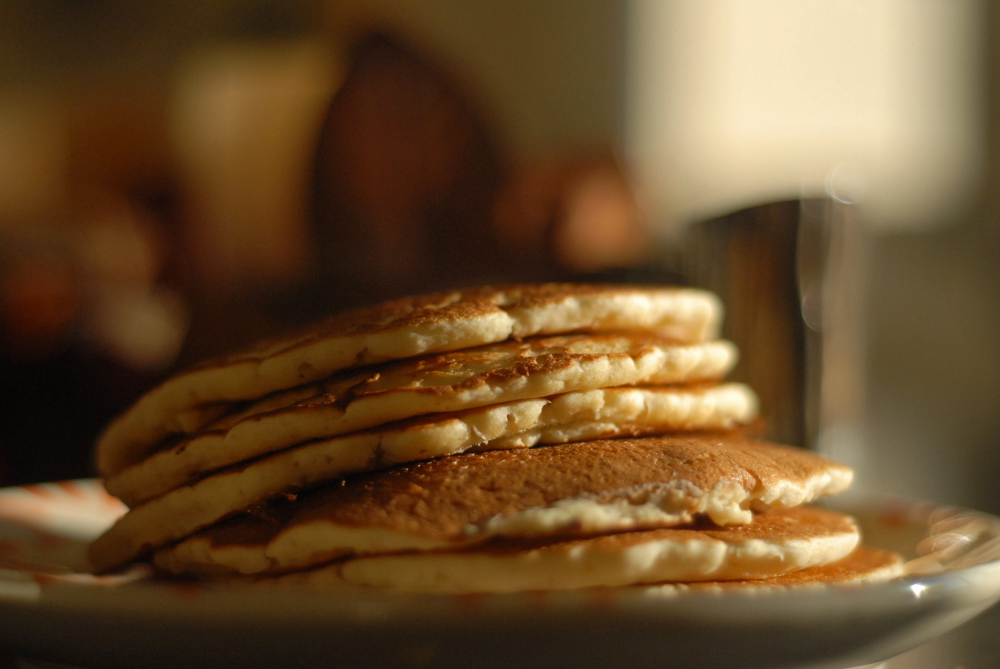

Home
Gluten-Free Pancakes

Picture by Randall Chancellor, license.
Description
This fluffy gluten-free pancake recipe will bring back sweet childhood memories. Top with maple syrup and enjoy!
Ingredients
- 1 cup almond flour
- 1 tablespoon chocolate chips, or more to taste (Optional)
- ½ teaspoon baking soda
- 1 pinch salt
- 1 pinch ground cinnamon, or to taste (Optional)
- 1 egg
- 1 egg white
- 1 tablespoon honey
- 2 teaspoons vanilla extract
- ¼ cup water, or as needed
Steps
- Preheat a lightly oiled griddle to 375 degrees F (190 degrees C).
- Whisk almond flour, chocolate chips, baking soda, salt, and cinnamon together in a bowl. Whisk egg, egg white, honey, and vanilla extract together in a separate bowl. Stir flour mixture into egg mixture, adding enough water to reach a pancake batter consistency.
- Drop batter by large spoonfuls onto the prepared griddle and cook until pancakes are golden brown and edges are dry, 3 to 4 minutes. Flip and cook until browned on the other side, 2 to 3 minutes. Repeat with remaining batter.